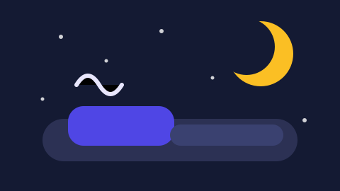

هذا المقال عن التنظيم لا عن العلاج. إن كنت تعاني من انقطاع النفس أو أرقاً مزمناً فأول خطوة هي استشارة طبّية، أما ما يلي فهو ما يمكنك تجربته بنفسك هذا الأسبوع.
١. ثبّت وقت الاستيقاظ قبل وقت النوم
الجسم ينظّم نفسه حسب ساعة الاستيقاظ. لو ثبّتها على ساعة واحدة كل يوم — بما في ذلك نهاية الأسبوع بفرق لا يزيد على ساعة — سيتقدّم وقت النوم من نفسه دون مجهود. ابدأ بهذه الخطوة وحدها ثلاثة أيام.
٢. اضبط الإضاءة لا الوقت فقط
الإضاءة الساطعة في الصباح هي المفتاح. أضف هاتين العادتين:
- صباحاً: تعرّض لضوء النهار في أول ساعة بعد الاستيقاظ، ولو عشر دقائق قرب نافذة.
- مساءً: أخفِ الأنوار القوية قبل ساعتين من النوم، واستخدم مصباحاً خفيفاً ودرجة حرارة شاشة أقل صفراء.
٣. برّد الغرفة
النوم يحتاج انخفاضاً بسيطاً في حرارة الجسم، والغرفة الحارة تعطّل ذلك. القاعدة العملية: يفترض أن تكون ١٨–٢٠ درجة، وتهوية ١٠ دقائق قبل النوم في الصيف، وأغطية خفيفة تسمح بالتعديل.
٤. آخر موعد للكافيين
| المشروب | أثر الكافيين | آخر موعد مقترح |
|---|---|---|
| قهوة مركّزة | ٥–٧ ساعات | قبل الظهر |
| شاي أسود أو أخضر | ٣–٥ ساعات | قبل العصر |
| مشروب غازي | ٣–٤ ساعات | غير مناسب بعد الظهر |
المشكلة أن الكافيين لا يمنع النوم فقط، بل يقلّل العمق. لذلك قد تنام في الساعة نفسها وتستيقظ متعباً.
٥. روتين ثابت لآخر ٣٠ دقيقة
اجعل آخر نصف ساعة مشابهاً كل ليلة، بنفس الترتيب. مثال جاهز:
- إغلاق الشاشات وإبعاد الهاتف عن غرفة النوم.
- غسل الوجه أو دشّ دافئ قصير.
- ٥–١٠ دقائق قراءة ورقية.
- تدوين ثلاث مهام للغد حتى لا تفكر فيها في السرير.
كن حازماً في نقطة واحدة: الهاتف خارج غرفة النوم. هذه الخطوة وحدها تحسّن النوم عند أغلب الناس أكثر من أي شيء آخر.
٦. لا تعاند السرير أكثر من ٢٠ دقيقة
إن لم يأتِ النوم في عشرين دقيقة، انهض واذهب إلى غرفة أخرى في ضوء خفيف حتى تشعر بالنعاس ثم عد. البقاء مستلقياً في القلق يجعل السرير مرتبطاً بالتوتر، وهذا يزيد المشكلة سوءاً.
٧. حرّك جسمك نهاراً وقلّل الهضم ليلاً
- الحركة: ٣٠ دقيقة مشي في النهار تحسّن عمق النوم، شرط أن تكون قبل خمس ساعات من النوم.
- العشاء: خفيف، وقبل ثلاث ساعات من السرير على الأقل.
- السوائل: قلّل شرب الماء في الساعتين الأخيرتين لتقلّ الاستيقاظات.
- القيلولة: إن أردتها، فقبل الرابعة بعد الظهر ولا تتجاوز ٢٥ دقيقة.
جدول تتبّع أسبوعي
لا تعتمد على الإحساس وحده؛ التتبّع يجعل النتيجة واضحة ويحفظ لك ما نجح. هذا الجدول كافٍ:
| اليوم | ساعة الاستيقاظ | آخر قهوة | دقائق الحركة | تقدير النوم (١–٥) |
|---|---|---|---|---|
| الاثنين | ||||
| الثلاثاء | ||||
| الأربعاء | ||||
| الخميس | ||||
| الجمعة |
بعد أسبوع، انظر إلى الأيام التي حصلت فيها على تقدير ٤ أو ٥، وابحث عن القاسم المشترك. هذا هو العامل الذي يجب أن تتشبث به.
لا تحاول تطبيق الخطوات السبع في ليلة واحدة. خطوة كل ثلاثة أيام، ومراجعة كل أسبوع.
الخلاصة في ثلاث نقاط
- ابدأ بثبات وقت الاستيقاظ والإضاءة الصباحية، فهما الأقوى أثراً.
- آخر موعد للقهوة قبل الظهر، والهاتف خارج غرفة النوم.
- سجّل النوم أسبوعاً كاملاً، واعتمد على ما تثبته الأرقام لا على الذاكرة.